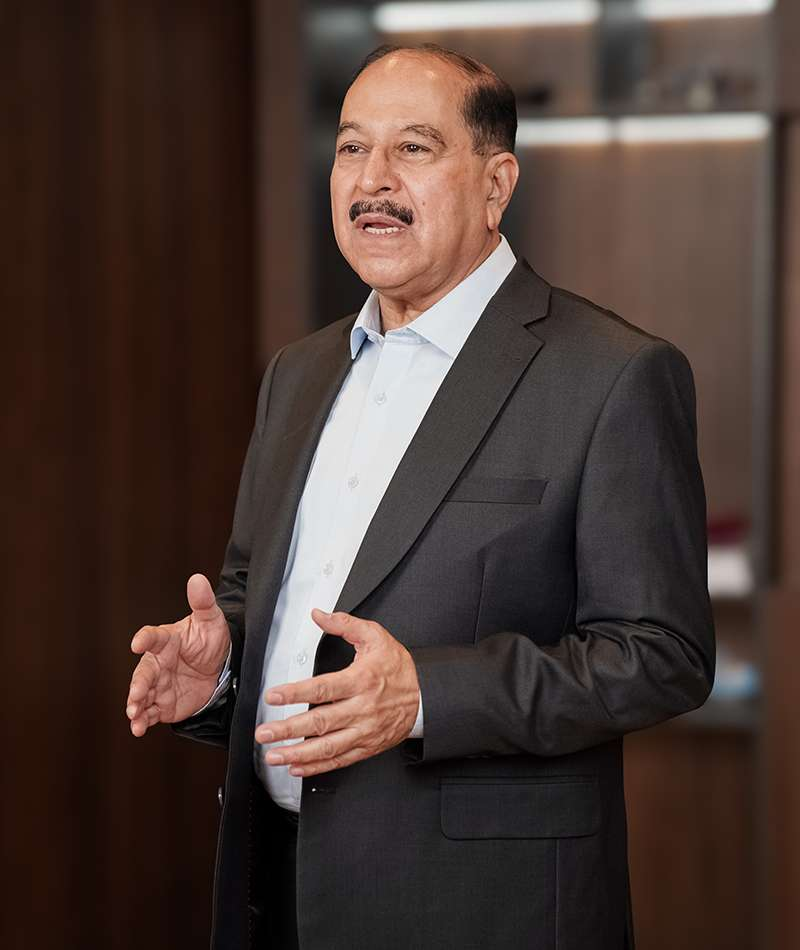

As a nephrologist at Mayo Hospital Lahore, Dr. Sulman Shakoh witnessed the suffering of kidney failure patients daily - especially those who could not access or afford costly dialysis care. Families would watch their loved ones deteriorate, powerless against the financial burden.
In 1996, Dr. Sulman Shakoh, along with his wife and two friends, joined hands with compassionate donors to establish the first-ever free haemodialysis center in Sir Ganga Ram Hospital. What started with just two machines has now grown into a movement.
We believe that in a humane society, access to life-saving treatment should never depend on your bank balance.
- Dr. Sulman Shakoh, Founder